Redesigning Prodigy Finance:
Transforming an 8-Step Application into a High-Converting Engine
How a dual-phased product revamp—triaging critical drop-offs in Phase 1 and re-architecting an archaic 8-step paper-era wizard into a continuous, data-driven application in Phase 2 & 3—delivered a +16% completion rate lift and unlocked +$5.76M/month in incremental student loan originations.
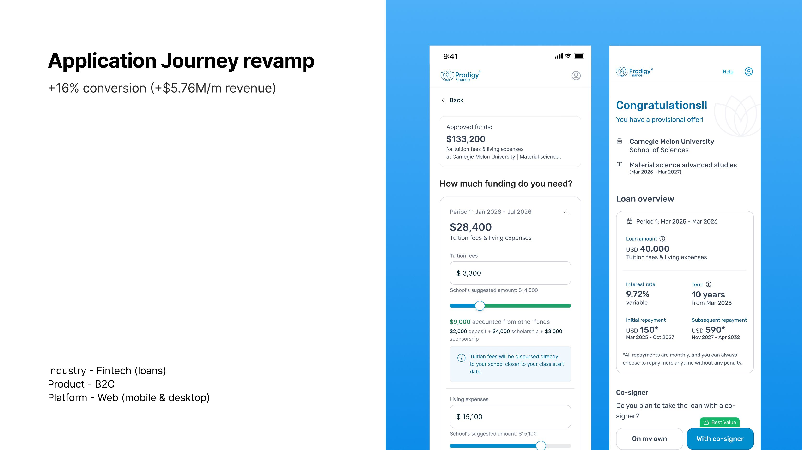
Zoom ScreenEnabling Borderless Education at Scale
Prodigy Finance solves a fundamental global inequality: traditional banks refuse to lend to students studying abroad without local collateral or a local co-signer.
By assessing international students on their future earning potential rather than historical domestic credit, Prodigy Finance has funded thousands of ambitious engineers, business leaders, and scientists pursuing master's degrees at top institutions in the United States, United Kingdom, and Europe.
However, the heart of the business model—the Origination Funnel—was built on a legacy stack. Applicants had to navigate a punishing 8-step web form demanding deep financial proofs, rigid budget breakdowns, and obscure legal verifications long before they even knew whether they would qualify for a loan offer.
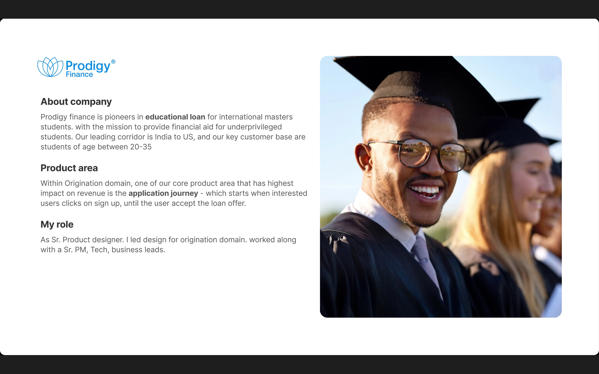
Zoom ScreenThe Origination Scope
The loan origination lifecycle is divided into 5 distinct milestones: Account Creation → Application Submission → Underwriting Decision → Loan Offer Review → Final Acceptance & Disbursement.
Our design mandate was focused squarely on the most vulnerable choke point: the journey from landing on the application form to provisional loan offer generation.
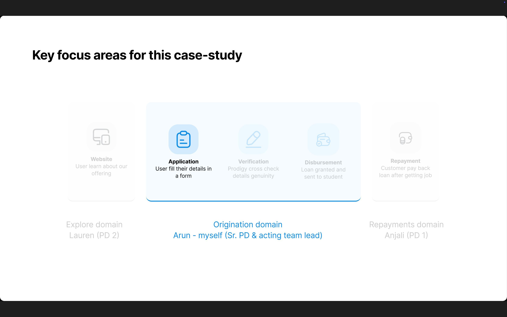
Zoom ScreenThe Anatomy of an 88% Abandonment Rate
Before redesigning a single pixel, we conducted quantitative funnel telemetry to translate abstract user frustration into concrete boardroom economics.
Analyzing product analytics data over a 6-month window uncovered an alarming reality: only 12% of users who initiated an application ever reached the offer stage. Over 88% of highly-motivated, university-admitted students were dropping off into the void.
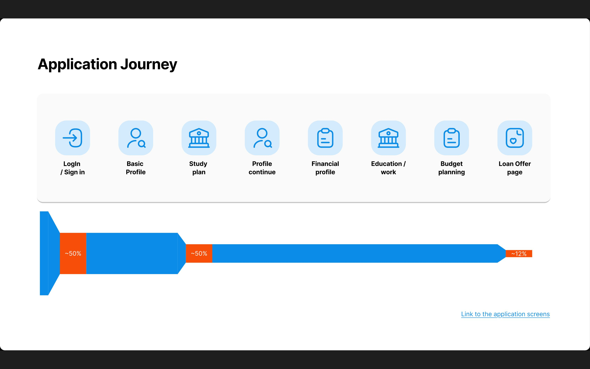
Zoom ScreenWhy Every 5% in Conversion Equal's $1.8M (₹17.17 Crore) Every Month
In international student lending, average ticket sizes are exceptionally high. A single completed application represents a lifetime opportunity for the student and substantial loan book assets for the business.
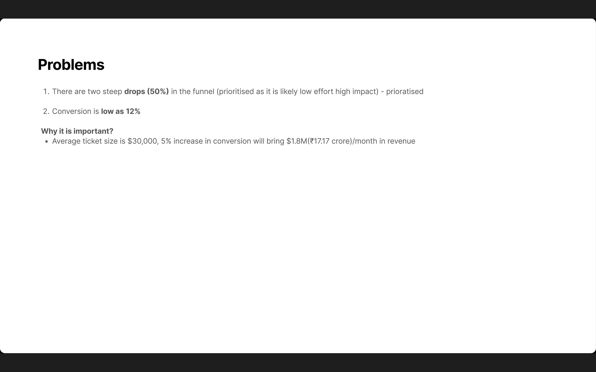
Zoom ScreenImmediate Triage: Fixing the Top 2 Leakages
A comprehensive system overhaul takes months. To capture immediate financial upside and earn engineering trust, we launched rapid surgical fixes targeting the two greatest drop-off cliffs.
Funnel instrumentation identified two specific touchpoints causing catastrophic friction within the first 90 seconds of the user experience: Touchpoint 1 (The Sign-In Gate) and Touchpoint 2 (The University Search Dropdown).
Touchpoint 1: Resolving Sign-In Heap Bugs
Heap telemetry indicated that 50% of arriving traffic bounced at account registration. Users were hitting silent validation dead-ends, session timeouts on social login, and rigid password constraints without clear affordances.
Generic server-side error banners, social auth state wipes on mobile browsers, and invisible password validation rules.
- Errors displayed only after full page reloads
- Session drops when switching tabs for verification codes
- Unclear password complexity rules led to 3.2 avg retries
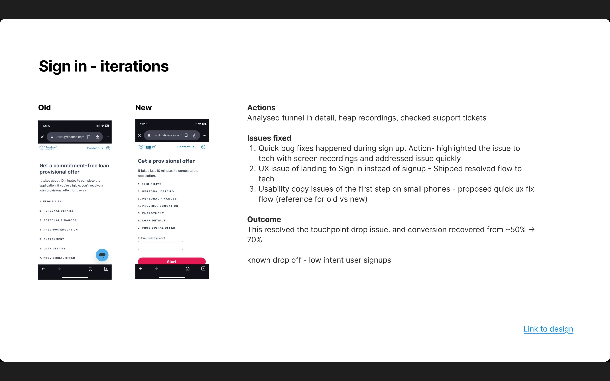
Live interactive requirement checklist, persistent session tokens, and instant Google/LinkedIn single-click authentication.
- Real-time visual checklist ticks off password rules live
- Preserved application state even across browser restarts
- One-tap social login with zero redirect loops
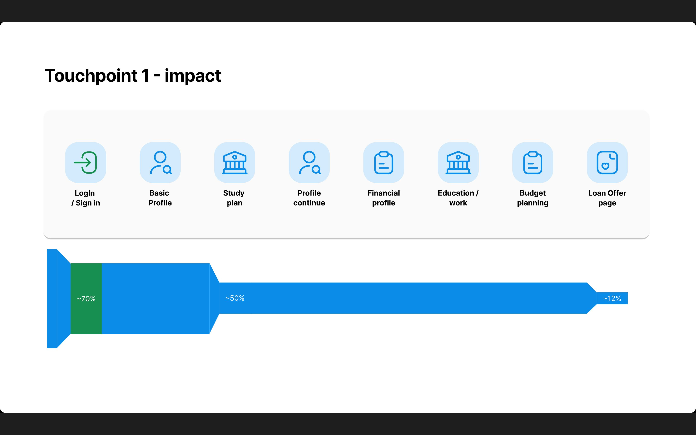
Touchpoint 2: The Rigid School Directory Search
At Step 2, students selected their admitted university and course. An exact-string SQL query meant that typing "Columbia" instead of "Columbia University - School of International and Public Affairs" yielded "0 Results Found". Students assumed Prodigy did not support their dream school and exited.
Flat alphabetical select box containing 1,200+ unorganized programs with no fuzzy search or alias mapping.
- "MIT" returned zero results (required "Massachusetts Inst...")
- Mobile keyboards caused dropdown cutoff bugs
- Dead-end empty state with zero alternative guidance
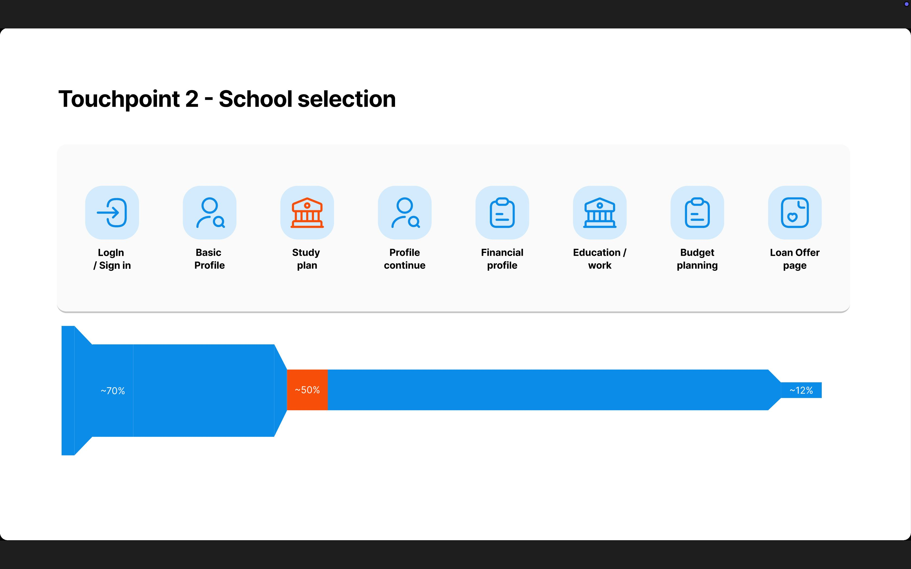
Predictive typeahead matching acronyms and colloquial names, accompanied by a safety valve: "Can't find your school? Let us check eligibility for you."
- Instant alias resolution for acronyms (e.g., LBS, INSEAD, CMU)
- Curated badges for popular programs and country filters
- Unlisted school lead capture preventing hard drop-offs
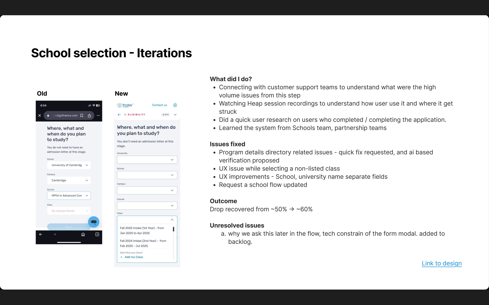
Auditing the System & Listening to Applicants
While Phase 1 patched the immediate leaks, the core product was still fundamentally misaligned with applicant psychology. We launched a rigorous qualitative and heuristic investigation.
We conducted a forensic step-by-step UX/UI and copy audit across all 8 existing steps, complemented by 15 in-depth remote interviews with active applicants across India, Nigeria, Brazil, and Kenya who were in the process of applying to US/UK universities.
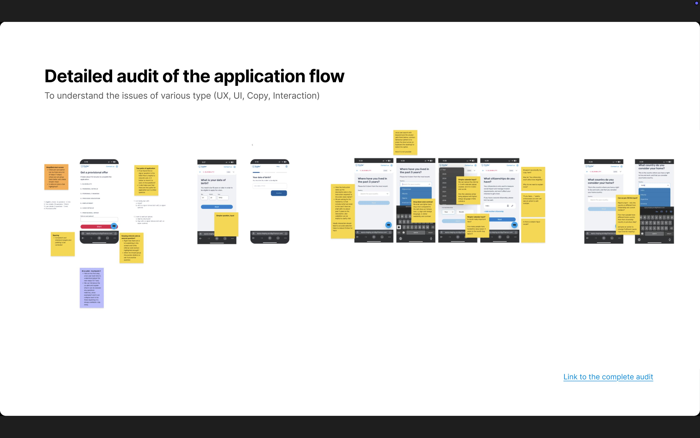
Zoom ScreenThe Voice of the Applicant
International students are under immense emotional pressure: visa application deadlines are looming, tuition deposits are due, and rejection feels like the end of their career dreams. Our forms were amplifying that anxiety rather than calming it.
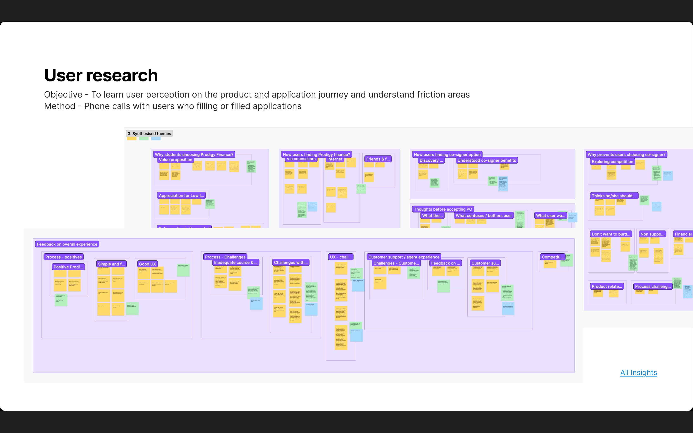
Zoom Screen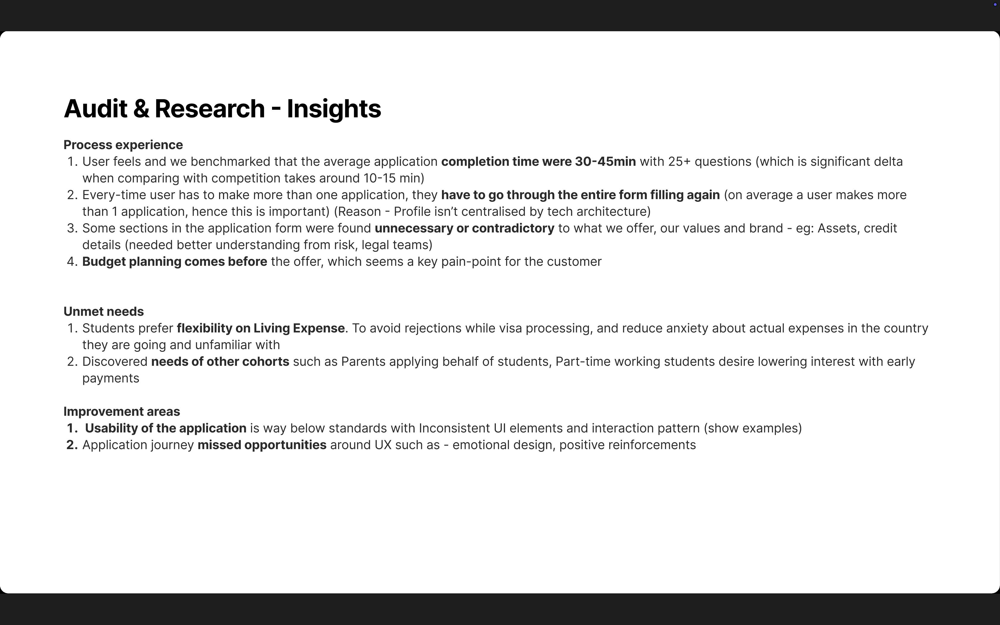
Zoom ScreenThe Strategic Pivot: From Interrogation to Qualification
We stopped treating the application as a digital photocopy of a paper mortgage form and re-engineered it into a progressive, transparent qualification engine.
To eliminate the 8-step cliff, we anchored the product strategy around 3 foundational bets negotiated across Design, Credit Underwriting, and Compliance:
Ask only what is strictly required to generate an algorithmic credit offer. Granular budgeting and complex cost breakdowns are deferred until after provisional approval is granted.
Replace manual PDF uploads (tax slips, salary statements, bureau reports) with instant API-driven credit bureau pulls (Equifax/Experian/CIBIL) with explicit applicant OTP consent.
Decouple personal master data from specific loan applications. A student applying for multiple universities can reuse their verified profile with a single tap.
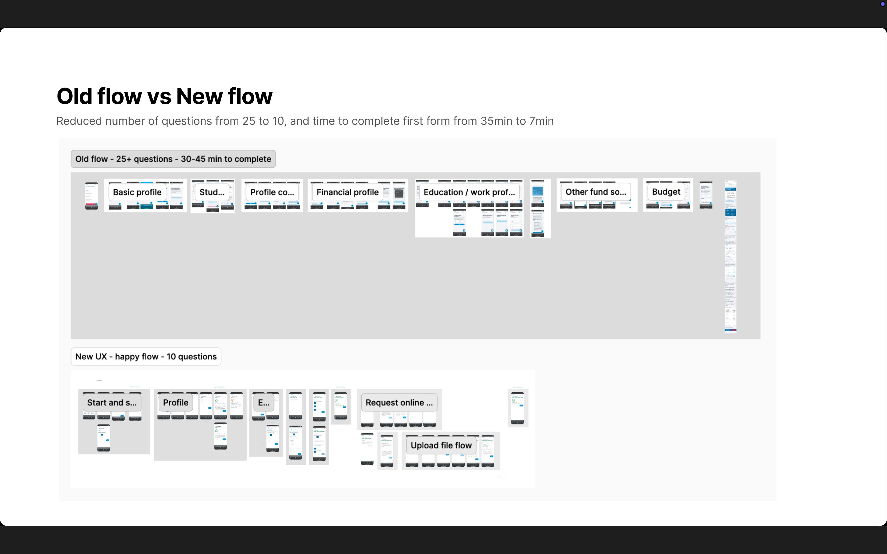
Zoom ScreenVisual Spec: High-Fidelity Information Architecture & User State Flow
Use this specification in Figma to create an exportable polished vector flowchart contrasting the legacy 8-step linear hurdle with the new 3-stage contextual state machine.
• Right Column (Redesign): 3 green-accented connected capsules: (1) Identity & Program (3 mins) → (2) Automated Instant Bureau Score (15 secs) → (3) Interactive Provisional Offer (Instant).
• Annotation Pills: Highlighting API triggers, OTP verification hooks, and asynchronous save-and-resume anchors.
The Redesign: Four Critical Architectural Solutions
With consensus established across Engineering, Risk, and Credit Underwriting, we rebuilt the application interface from the foundational design tokens up to the final offer screen.
1. Transforming Budget Planning: From Barrier to Post-Offer Customizer
In the legacy flow, students were forced to guess future living expenses down to rent, utilities, and books before receiving an answer. In the redesign, we pre-populated standard living costs based on university-verified cost-of-attendance databases, allowing students to submit their request in seconds and fine-tune their loan amount after provisional approval.
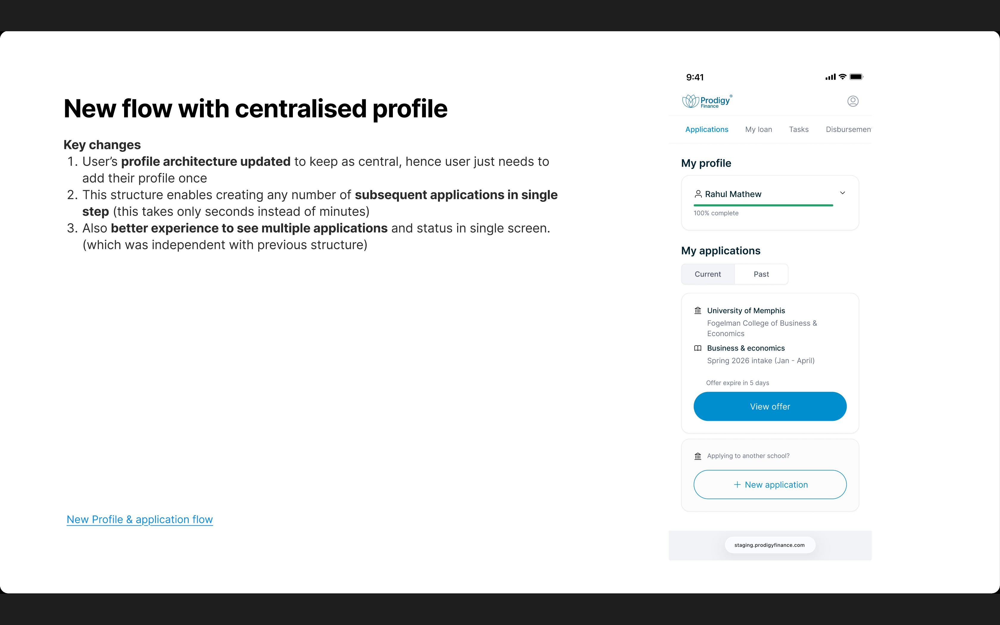
Zoom Screen2. Instant Automated Credit Score Pull
Rather than asking applicants to hunt down credit reports and upload scanned PDFs (which took an average of 4.2 days to verify manually), we partnered with Credit Underwriting to integrate direct bureau APIs. With a simple consent checkbox and phone OTP, the applicant's credit profile is verified in 15 seconds with zero manual documentation.
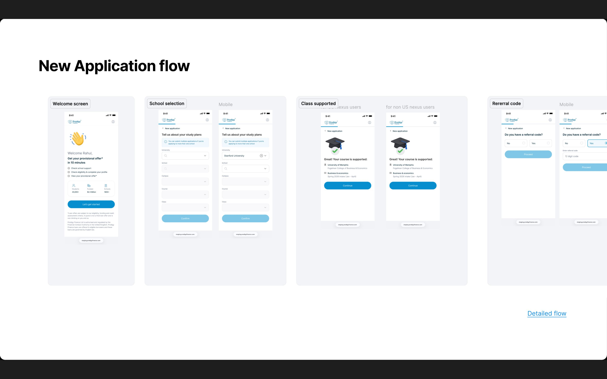
Zoom Screen3. Centralized Profile Data Architecture
Master's applicants rarely apply to a single institution—they juggle multiple offers from Stanford, Oxford, and INSEAD simultaneously. We architected a persistent profile layer that stores verified KYC, identity, and academic documents once, allowing applicants to generate subsequent loan applications with zero redundant typing.
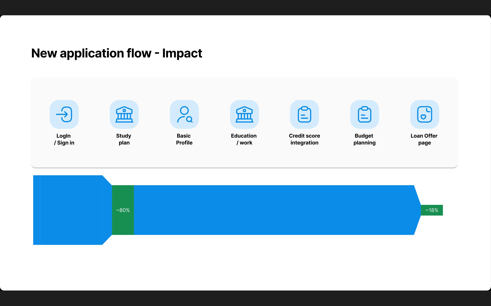
Zoom Screen4. Design System Primitives & Responsive Polish
Over 52% of initial visits came through mobile devices. We built a unified library of accessible fintech primitives: touch-optimized currency inputs with automatic FX conversion preview, sticky thumb-friendly action bars, resilient auto-save indicators, and clean progress steppers.
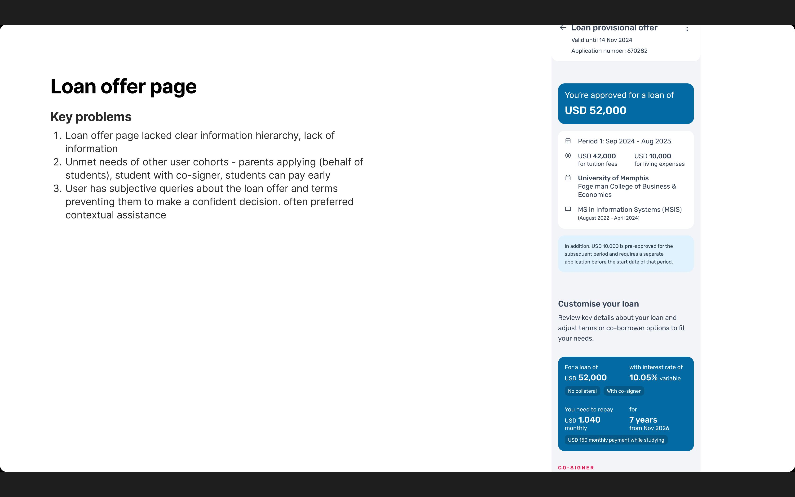
Zoom Screen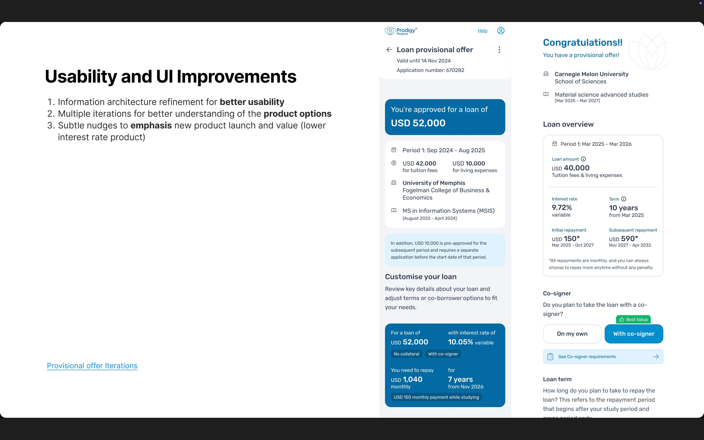
Zoom ScreenThe Fast Follower: AI Assistant "Lily"
Getting approved was only half the battle. When students landed on their provisional loan offer, complex lending terminology paralyzed them into indecision.
In our user testing, applicants stared at terms like "LIBOR/SOFR spread", "Compounding in-school grace period", and "FX disbursement hedge" with deep anxiety. Over 80% postponed accepting their offer, asking friends or seeking advice on Reddit, during which many accepted competing domestic bank offers.
To eliminate this barrier, we launched an innovative fast-follower feature: Lily, an in-context conversational AI assistant embedded directly inside the loan offer review page.
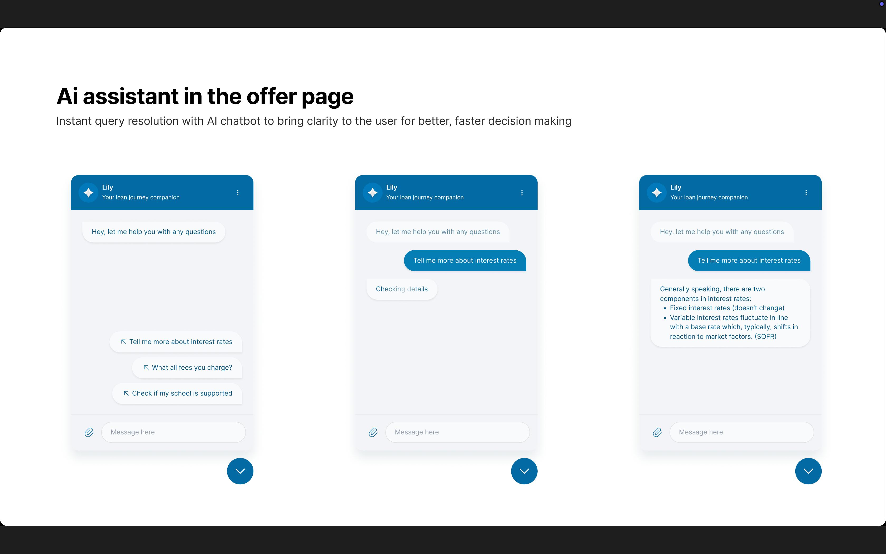
Zoom ScreenThe Measured Impact of Lily
Lily provided personalized answers to questions like "What happens if I make prepayments during my summer internship?" and "Can my parents pay part of my tuition directly in Rupees?"
Over 64% of applicants actively queried Lily on the offer screen. Students who engaged with Lily were 2.3× more likely to accept their loan offer within 24 hours compared to unassisted cohorts.
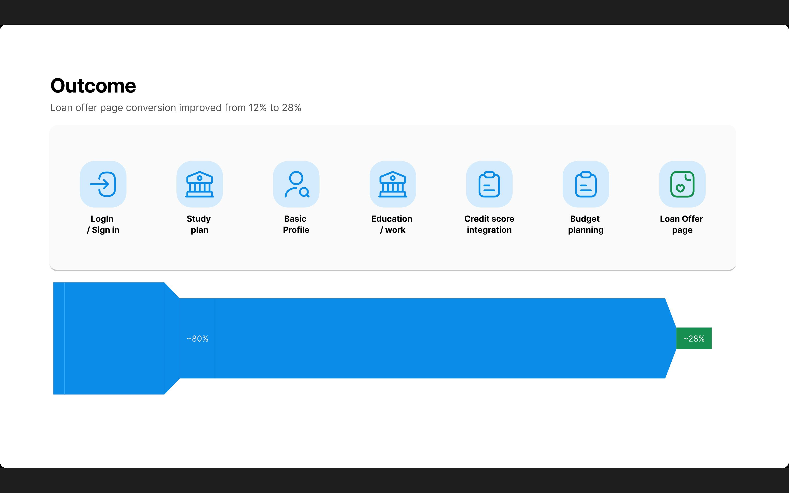
Zoom ScreenThe Bottom Line: Measurable Business & Human Impact
The dual-phased revamp transformed Prodigy Finance's core acquisition pipeline into an industry-leading, customer-centric origination engine.
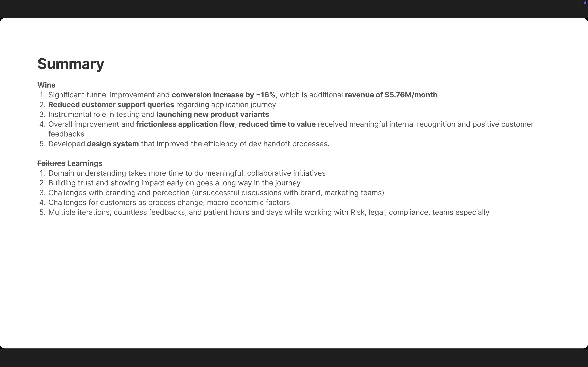
Zoom ScreenKey Reflections & Trade-offs
- Phase 1 Quick Wins Bought Credibility: Delivering a +20% bump at sign-in within two weeks proved to skeptical executive stakeholders that design friction was burning real capital.
- Aligning Design with Underwriting Math: Rather than fighting Risk teams, we co-designed the deferred data model so they received even higher quality risk telemetry at lower friction.
- Empathetic Microcopy: In stressful moments, clear reassurance (e.g. "Checking your score won't affect your credit rating") was worth more than fancy animations.
- Jurisdiction Regulation Divergence: Indian bureau APIs (CIBIL) behaved differently than US credit bureaus, requiring localized fallback flows for students without domestic credit history.
- AI Guardrails for Compliance: Lily's system prompts had to be strictly sandboxed with Legal to avoid making promissory commitments that violated consumer lending regulations.
- Engineering Legacy Dependencies: Several monolith endpoints required parallel shims to support continuous state saving before the microservices overhaul completed.
Visual Spec: Social / Portfolio Feature Card
When featuring this project on external design showcases or LinkedIn carousels, build a crisp dark-mode 16:9 hero card summarizing:
• Left Hero Mockup: Floating tilted 3D perspective of the mobile offer screen with the AI Lily chat drawer expanded.
• Right Metric Badges: Bento layout highlighting +16% Conversion Lift, +$5.76M Monthly Origination, and -78% Application Time.
• Footer Pill: "Case Study by Arunkumar • Lead Product Designer".